Sinop Eski Cezaevi-Sinop Eski Tersanesi
Üç yanı deniz olan ve tarihî Sinop Kalesi duvarlarının içerisinde yer alan cezaevine ev sahipliği yapan kale, yaklaşık 4000 yıl önce Gaskalılar tarafından yapılmıştır. Yunanlar, Pontus, Roma, Bizans, Selçuklu ve Osmanlılar kendi dönemlerinde kaleyi korumuş ve güçlendirmişlerdir. Kalenin cezaevi olarak kullanımına ait en eski belgeler ise 1568 yılına dayanmaktadır. Evliya Çelebi seyahatnamesinde bu zindandan şöyle bahsetmiştir;
"Büyük ve korkunç bir kaledir. 300 demir kapısı, dev gibi gardiyanları, kolları demir parmaklıklara bağlı ve her birinin bıyığından 10 adam asılır nice azılı mahkûmları vardır. Burçlarında gardiyanlar ejderha gibi dolaşır. Tanrı korusun, oradan mahkûm kaçırtmak değil, kuş bile uçurtmazlar."
İç kalenin resmi olarak zindana dönüşmesi ise 1887 yılında olmuştur. O dönem Sinop Mutasarrıfı Veysel Paşa yeni binalarla birlikte bir de hamam eklemiştir. 1939 yılında da çocuk hapishanesi olarak kullanılmak üzere bir bina daha yapılmıştır.
Sabahattin Ali, “Duvar” adlı öyküsünde Sinop Cezaevi’ni şu sözlerle anlatmıştır:
“Uzun zamanlar deniz kenarında ve surlar içindeki bir hapishanede kaldım. Kalın duvarlara vuran suların sesi taş oralarda çınlar ve uzak yolculuklara çağırırdı. Tüylerinden sular damlayarak surların arkasında yükseliveren deniz kuşları demir parmaklıklara hayretle gözlerini kırparak bakarlar ve hemen uzaklaşırlardı.”
Kırım Hanı II. Devlet Giray, Gürcü Nusret, Sabahattin Ali, Refik Halit Karay, Mustafa Suphi, Ahmet Bedevi Kuran, Ruhi Su, Burhan Felek, Zekeriya Sertel, Refi' Cevad Ulunay, Celal Zühtü Benneci, Hüseyin Hilmi, Osman Cemal Kaygılı, Kerim Korcan, Osman Deniz bu cezaevinde yatmış bazı isimlerdir.
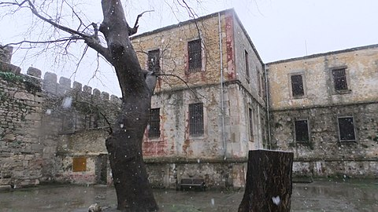

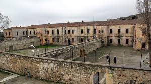
Erfelek Şelaleri
Tatlıca Şelaleleri, Erfelek Şelaleleri veya Tatlıca takım şelaleleri, Sinop'un Erfelek ilçesine bağlı Tatlıca köyü yakınlarındaki sıra şelalelerdir. Tatlıca irili ufaklı 28 ayrı şelale barındırmaktadır. Şelaleler Karasu Çayı üzerindedir. Burada tırmanma ve trekking yapılabilir. Şelale kenarındaki oyuklar ve taş şekiller basamak olarak kullanılıp yukarı tırmanılır. 28 şelaleden, ilk şelaleye tırmanılamaz. Bu şelaleyi dönüş yolundan geçmek gerekir. Bazı şelalelerden yukarı, dönüş yoluna çıkış vardır. Bu dönüş yolu ise sadece doğada yürümek için de kullanılabilir. Dönüş yolu üstünde çay bahçeleri vardır. Şelalelerin en tepesinde de bir cafe bulunmaktadır. Son yıllarda şelaleleri ziyaret sayısı fazlalaşmıştır.
1997 Yılında Erfelek Barajının yol yapım çalışmaları ile ulaşım sorunun ortadan kalkması sonucu gün yüzüne cıkmış kayıp bir vadide yer alırlar.
Tatlıca Şelaleleri, Tarım ve Orman Bakanlığı tarafından 2011 yılında tabiat parkı olarak ilan edilmiştir. Toplamda 720 dekarlık alanı bulunmaktadır.
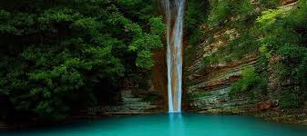
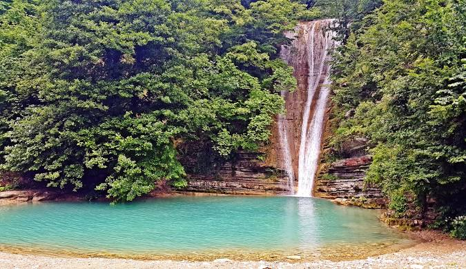
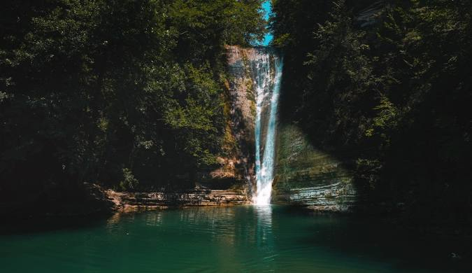
İnaltı Mağarası
İnaltı Mağarası, gerek mağara içi damlataşları özelliği, gerekse doğal çevresinin güzelliği ile turizm amaçlı kullanıma son derece uygundur. Ortalama uzunluğu 658 metredir. MTA tarafından 1996 yılında inceleme yapılan İnaltı Mağarasının 300 metrelik bölümü aydınlatılmış olup turizme açılmıştır. Mağaranın devamındaki 358 metrelik kısmının ancak 125 metrelik bölümünün turizme açılmaya uygun olduğu tespit edilmiştir. Mağara doğu-batı yönünde (S) çizerek uzanır. Giriş salonunun boyu 125 metre, tavan yüksekliği 15 metre, genişliği 10-12 metre arasında değişen düzgün bir galeriye açılır. Bu galeri mağaranın en geniş ve en kuru bölümüdür. Daralarak ilerleyen mağarada sarkıt, dikit, sütun, örtü ve duvar damlataşları, damlataş havuzları görülmeye başlanır. Tabanda bulunan Dogger yaşlı granit temel üzerine gelen ve karst taban düzeyini oluşturan Malt- Alt Kereatse yaşlı inatlı formasyonu içinde yatay gelişmiştir. Buna karşılık mağara tabanına yakın alt kesimlerde ve su düzeyinin hemen üzerinde karnabahar ve patlamış mısır şekilli damlataşlara da yer yer rastlanılmaktadır. Bu bölgedeki mağara ve çukurların oluşum temelinde erime özelliğini barındıran yüksek derecede kireçtaşı bulunur. İnaltı Mağarası, mistik ve gizemli görüntüsü ile gelen ziyaretçilerini büyüler. Mağaranın içerisine gezi güzergâhı ve önüne de kır kahvesi yapılmış olup; misafirlerini heyecanla beklemektedir.
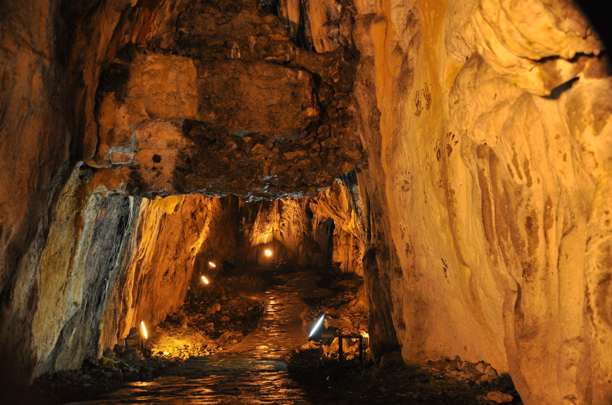
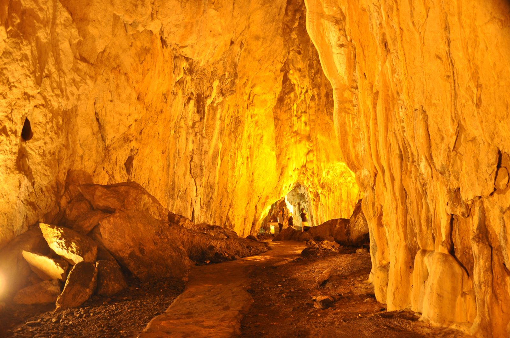
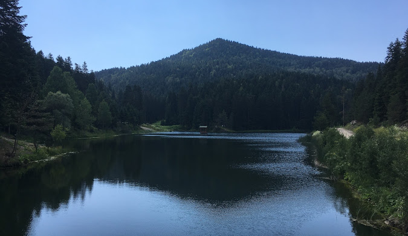
Şahin Tepesi
Sinop’a geldiyseniz, şehrin her anını farklı bir şekilde deneyimlemek istiyorsanız, günün her vaktinde farklı manzaralar sunan Şahin Tepesi’ni mutlaka ziyaret etmelisiniz. Bu nokta, şehre oldukça yakın olmasına rağmen sunduğu manzara ile her anına değer. Tepeden bakıldığında, denizin mavi tonları ve çevredeki binalarla birleşen yeşilin sınırlı tonları dikkat çeker. Ancak ne yazık ki, etrafındaki artan yapılaşma ve binalar, doğal görüntünün önünde bir engel oluşturuyor. Bu nedenle, aslında çok da doğanın içinde değiliz; tepede olsanız da, şehrin gürültüsünden bir nebze uzaklaşmış olsanız da, yeşil alanların yerini binalar almış durumda. Şahin Tepesi’ne tırmanırken oldukça dik bir yokuşla karşılaşırsınız, fakat manzara her adımınıza değdiğini hissettirir. Sonunda ulaştığınızda, gözünüzün önündeki panoramik görünümle birlikte, çevrenin doğal güzelliklerinin fazlasıyla şehirleşmiş olduğunu fark edebilirsiniz. Yine de bu manzara, pişmanlık duymayacağınız kadar etkileyici ve her ziyaretçisine unutulmaz bir hatıra bırakacaktır.
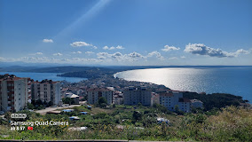
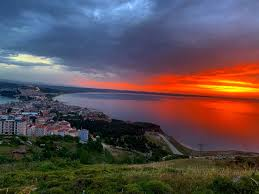
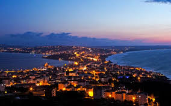